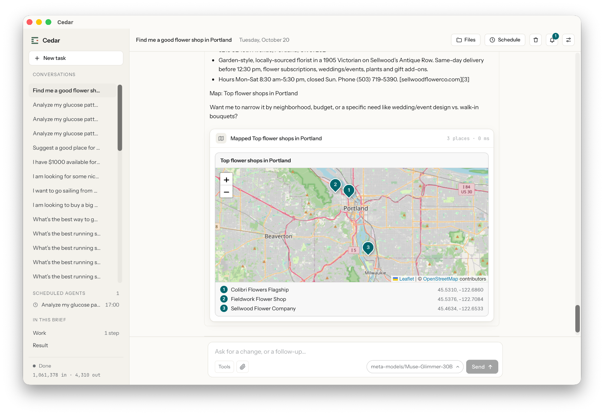
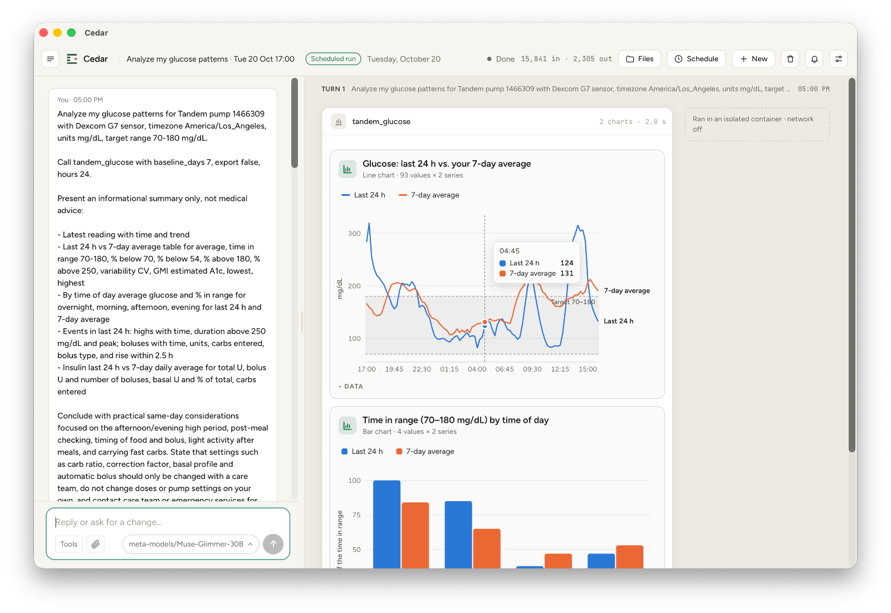
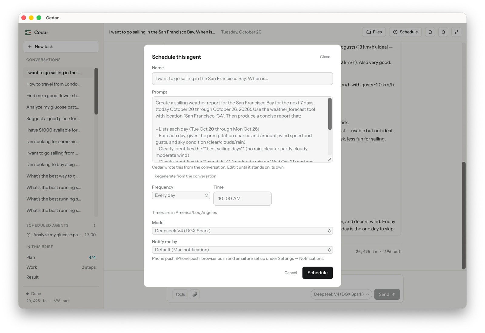
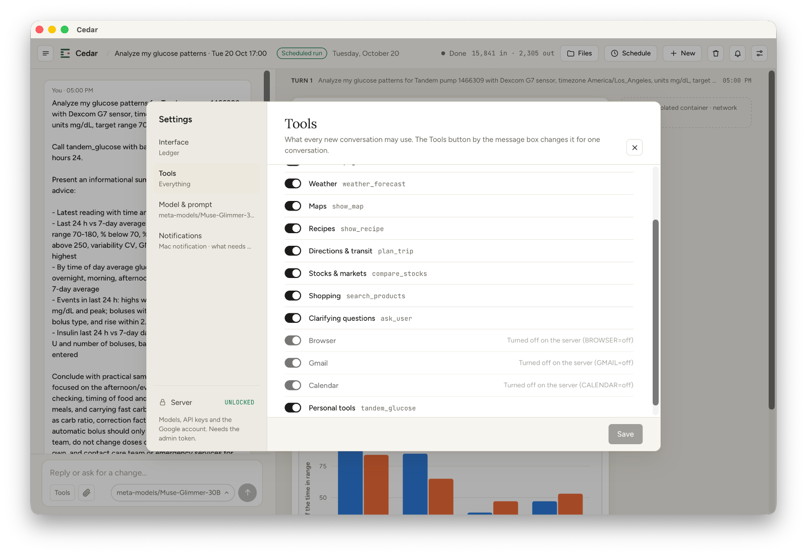
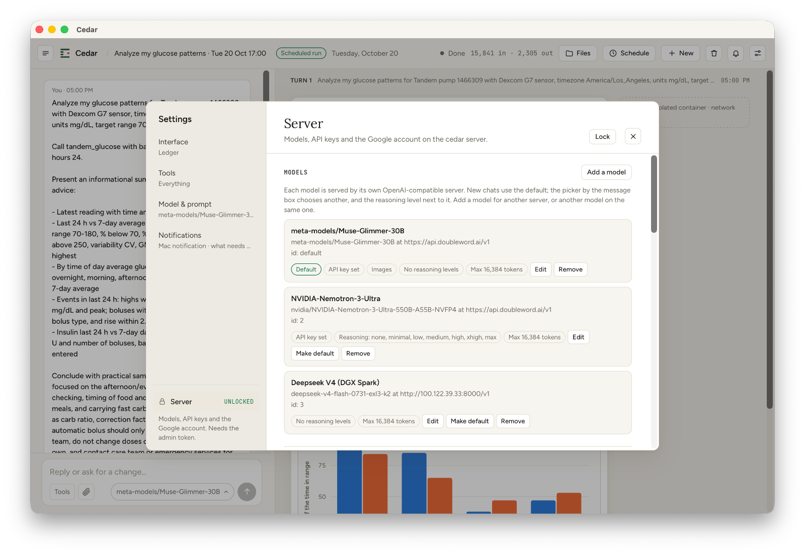
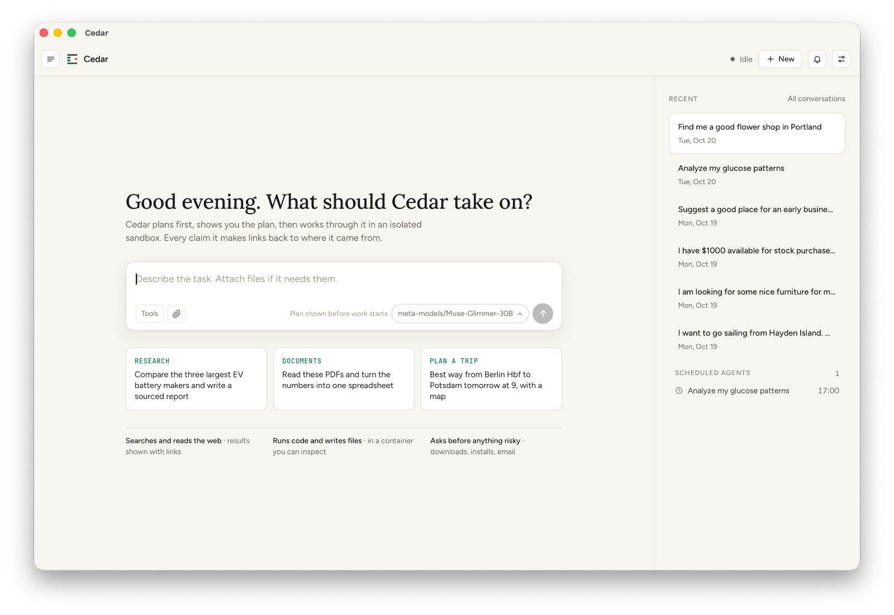
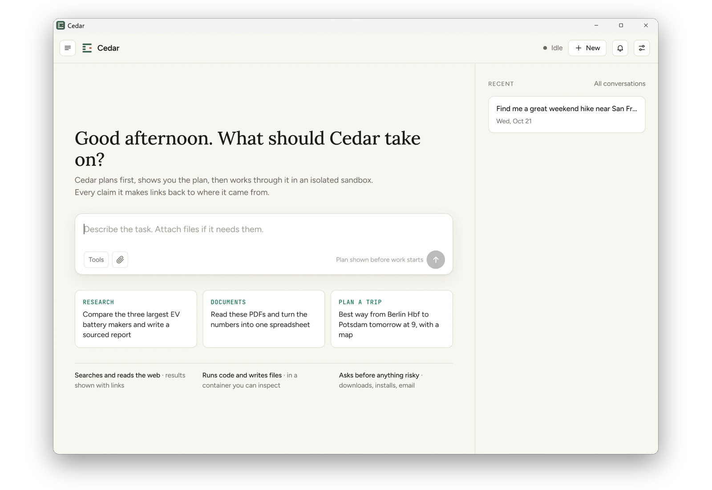
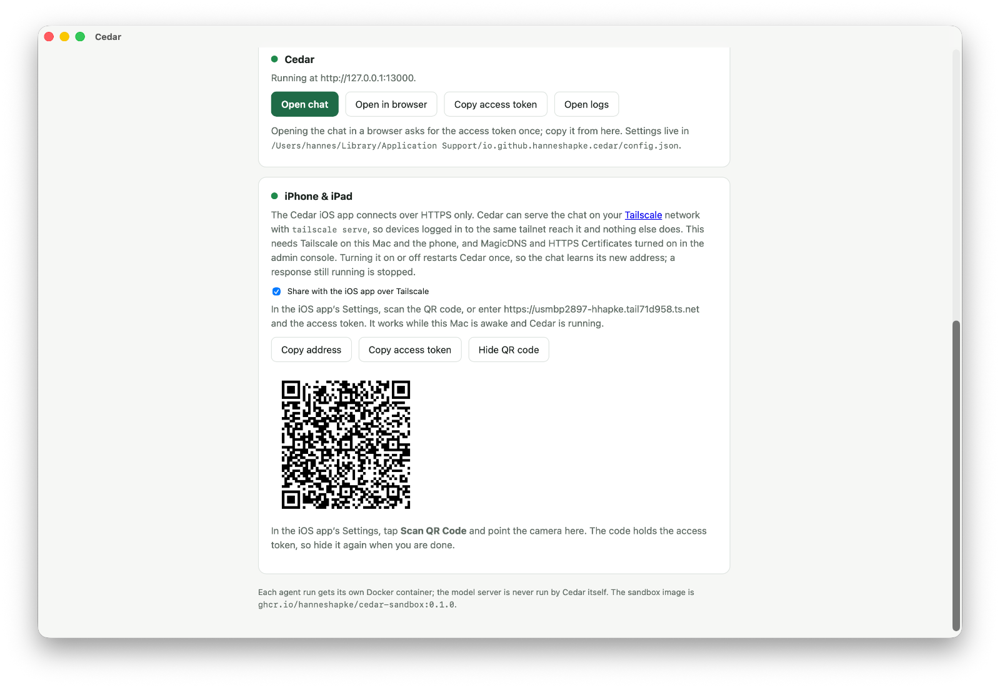
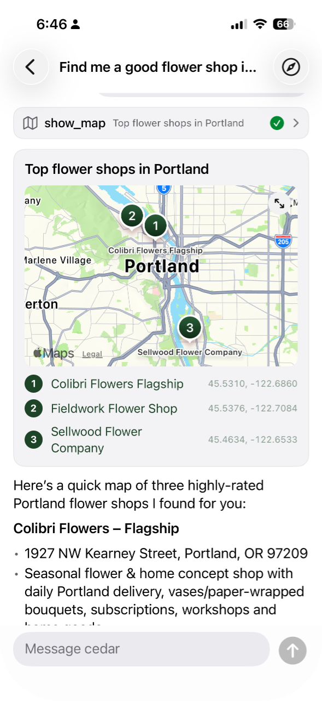

Give Cedar a task: research, documents, trips, your finances. It plans the work, does it in a sealed box, and shows you where every answer came from. Nothing leaves your computer unless you say so.
Mac app for Apple silicon · Windows app for x64 · Linux from source · Apache 2.0 · built in the open on GitHubCedar searches the web, reads your files, runs the numbers and writes the result: a report, a spreadsheet, a map, a chart. You see the plan before it starts and the sources when it's done.
A good flower shop, a quiet café, a trailhead for Saturday. Cedar searches, picks the best, and hands you a map with addresses, hours and the website for each.


Spreadsheets, PDFs, bank exports, even a connected health device. Cedar runs the numbers and explains them in plain words, with interactive charts you can hover over.
Turn any conversation into a schedule: every morning at 7, every Friday. It runs while you sleep and tells your desktop or iPhone when it's done.


Weather, maps, recipes, directions and transit, stocks, shopping, your email and calendar. Turn on what you want Cedar to reach. Everything else stays off.
Most assistants run in someone else's cloud. Cedar runs at home, and treats every task like a stranger in the house.
The model, your conversations and your files live on your machine. No account, no cloud, nothing to subscribe to.
Every task gets a fresh, throwaway workspace that can't see your documents, your photos or the internet unless you allow it. When it's done, the box is gone.
Sending an email, downloading a file, deleting something: Cedar stops and asks. You approve once, or always, or never.
Cedar isn't tied to one AI company. Run a model on your Mac or PC with Ollama or LM Studio, serve one from a Linux GPU box with vLLM, or point it at a server you trust. Switch between them per conversation.
Need something specific? Add a tool from the community with one click, after seeing exactly what it asks for. The first one reads an insulin pump and compares your day with your week.
Browse community tools →
Pick the computer that does the work: a Mac, a Windows PC or a Linux box at home. Whichever it is, Cedar for iPhone pairs with it and keeps up: the same conversations, maps and charts, a question when it needs one, and a notification when a task finishes while you're out.


Not code-signed yet, so Windows warns the first time: choose More info, then Run anyway.Got a GPU box or a home server, like an NVIDIA DGX Spark? One script builds Cedar from source, starts it next to vLLM, and serves the chat to your browser and your iPhone. Same sealed boxes, same guardrails.
Read the Linux guide →# build and start everything git clone https://github.com/hanneshapke/cedar cd cedar && scripts/cedar-stack.sh # show the code your iPhone scans scripts/cedar-stack.sh --pair
Paired with one scan, whatever Cedar runs on. The phone reaches it over a private connection (Tailscale); nobody else can.
cedar-stack.sh --pair

Three assistants that do tasks for you. OpenClaw lives in your chat apps and acts on your computer. Muse is Meta’s, run in Meta’s cloud. Cedar runs at home, on a Mac, a Windows PC or a Linux box, and keeps every task in its own sealed box.
Pick Cedar when the assistant should never touch the rest of your computer and your data should stay home. Pick OpenClaw when you want one assistant across all your chat apps that can act on your own computer. Pick Muse when you want nothing to set up and are happy for Meta to run it and hold your data.
OpenClaw details from its README, October 2026. Muse details from Meta’s launch announcement and press coverage, September 2026. Corrections welcome.On a Mac or a Windows PC, Cedar needs two free helpers, and the app walks you through both the first time it opens. On Linux, it's the same three steps from a terminal; the Linux guide has the details.
It builds the sealed boxes each task runs in. Free, one download. OrbStack works too on a Mac, Rancher Desktop on Windows. On Linux, Docker Engine.
Ollama or LM Studio put an AI model on your Mac or PC in minutes. On a Linux GPU box, run vLLM. Already have a server elsewhere? Use that.
Pick your model from the list, and give it a task. On Linux, run scripts/cedar-stack.sh and open the chat in your browser. Pair your iPhone whenever you like.